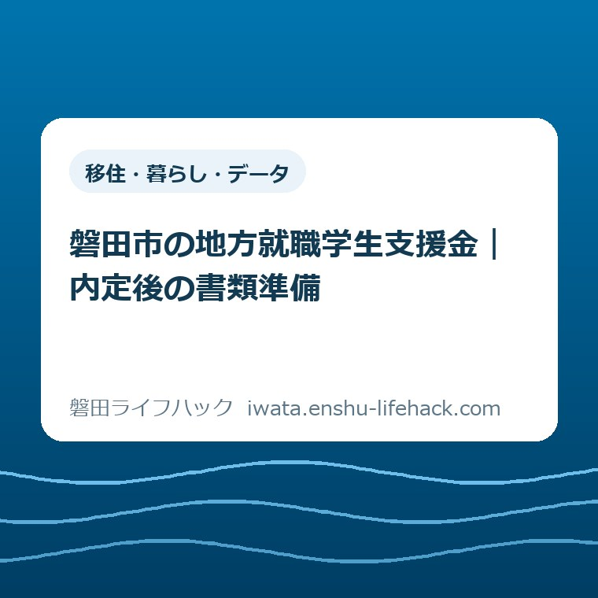

移住・暮らし・データ
磐田市の地方就職学生支援金｜内定後の書類準備

この記事の要点
Q. 内定が出た後、支援金の準備は何から始めればいい？
A. 大学・居住地・雇用条件で対象が変わるため、まず市の要件を確認します。2026年度の受付は2027年1月31日まで。在学中の交通費申請にも条件付きで対応しています。休日は交通費と引っ越しの領収書を1か所へ集め、大学や勤務先に依頼する証明書と分けておくと、次の確認がしやすくなります。
内定の後にも、学生が払っている手間がある
磐田市の地方就職学生支援金は、東京圏の学生なら全員が使える制度ではありません。大学の本部とキャンパス、在学期間、住んでいた地域、雇用契約などで対象が変わります。支援額を見る前に、自分がどの条件に当てはまるかを確かめる必要があります。
就職活動では、応募書類を整え、面接の日程を調整し、電車を予約します。内定が出た後も、卒業の準備と住まい探しが重なります。そのうえ支援金のために証明書を集める。学生は、申請ボタンを押す前から相当の手間を払っています。
大石浩之（磐田市／不動産業）です。私は、申請準備を「必要書類を全部そろえる」という一仕事にしない方がよいと考えます。自分のスマートフォンにあるものと、大学や勤務先に出してもらうものでは、動かせる日が違うからです。
この記事は制度の利用可否を判定するものではありません。2026年10月11日に確認した市の案内を土台に、内定後の休日にできる段取りへ置き換えます。今日の一歩は一つだけ。手元にある領収書を、紙でもデータでも一つの置き場所へ集めることです。
申請準備の入口は、大学・住所・働き方の照合
磐田市公式「地方就職学生支援金」は、移住等と就業の両方に要件を設けています。大学等の卒業・修了年度には、東京圏の対象地域に継続して住んでいることなどが求められます。東京圏とは東京都・埼玉県・千葉県・神奈川県ですが、条件不利地域は除かれます。
大学については、東京都内に本部がある大学等の、東京圏内の対象キャンパスに4年以上在学する条件が記載されています。卒業・修了済みか、卒業・修了見込みであることも確認事項です。「東京の学校に通っている」という説明だけでは足りません。公式ページから対象大学・学部の一覧も確認してください。
就業条件は、週20時間以上の無期雇用契約に基づくことなどです。在学中の交通費申請なら、その働き方をする見込みが求められます。勤務地が静岡県内にあるかに加え、移住先地域を中心とした採用か、東京圏勤務を前提としていないかも確認します。
勤務先にも除外条件があります。官公庁等や、本人の3親等以内の親族が経営を担う法人等についての条件も、市の案内にあります。国籍・在留資格などの要件もあるため、この記事の抜粋だけで対象と決めないでください。
私なら、まず手元の内定通知書の「勤務地」「雇用期間」「勤務時間」を探します。書かれていない項目は、自分で推測して埋めず、会社へ聞く欄に残します。企業名を知っていることと、その人の採用条件が確認できることは、別の話です。
市外の企業への就職だからと、すぐに諦める必要はありません。市の案内では勤務地等を静岡県内としています。住まいを磐田市に置く計画と勤務先の場所を分けて整理すると、確認すべき条件が見えます。ただし、県内勤務だけで全要件を満たすわけではありません。
在学中の交通費と、転居後の移転費を分ける
磐田市の地方就職学生支援金では、交通費と移転費をそれぞれ1回申請できます。交通費は就職活動に要した往復費用の2分の1以内で、上限5,940円です。移転費は移住に要した対象運搬費用の実費総額で、上限66,000円です。
意外に感じるかもしれませんが、引っ越しを終えてからでないと、何も申請できないわけではありません。市は在学中に交通費を申請する方の条件を分けて掲載しています。内定していること、就業開始予定日前1年以内であること、卒業等の後に就職して磐田市へ移る意思などが必要です。
卒業・修了した方については、磐田市へ移住したことに加え、申請時に卒業・修了の日から1年以内、かつ就業開始日から1年以内という条件があります。転入日から1年以上継続して住む意思も確認されます。自分の卒業日・就業開始日・転入日を別々に控えておくと、質問が具体的になります。
2026年度の受付期間は2026年7月1日から2027年1月31日までです。「就業開始日から1年以内」という個人の条件と、年度の受付期限は同じ意味ではありません。自分の日付が条件内でも、年度の窓口がいつでも開いていると考えないようにします。
2027年春に引っ越す予定なら、2026年度内に移転費も必ず申請できるとは読み取れません。在学中の交通費を先に申請できるか、移転費はどの年度・時点で相談するかを、市へ分けて確認してください。次年度の受付期間や条件を、今の案内から推測して予定表へ書き込まないことです。

領収書は、合計金額だけでなく中身を残す
磐田市の申請書類一覧には、交通費・移転費の領収書が入っています。電子申請では画像またはPDFを準備し、郵送ではそれぞれの写しを提出する案内です。市は領収書の撮影について、全体が写るようにする例も掲載しています。
交通費の資料は、就職活動で往復した記録として説明できる形にしておきたいところです。私は、領収書と一緒に、移動日・行き先・面接等の用件を短く控える方法を勧めます。このメモは市の指定書類ではありません。後で自分が予約メールを探し直す回数を減らすための整理です。
予約確認メール、カードの利用明細、領収書は、名前が違う資料です。決済履歴が残っているだけで領収書の代わりになるとは限りません。発行元の画面で領収書を取得できるか確認し、見つからない場合は、代替資料で受け付けられるか市へ相談します。
引っ越しについては、請求書の総額をそのまま対象額にしないでください。市が対象外として挙げる費用には、荷造り・荷解きの追加料金、工事・設置の追加料金、家具家電の購入・レンタル、敷金・礼金・仲介手数料などがあります。住まいに関係する支払いが全部含まれる制度ではありません。
そのほか、不用品回収、家電リサイクル、荷物の一時保管、自家用車やオートバイの運搬に伴う追加費用なども対象外です。見積もりの段階で運搬費と追加サービスの内訳を分けてもらえば、支払い後に内容を説明しやすくなります。対象になるか迷う項目は、業者の判断だけで確定させず市へ確認します。
私なら、引っ越し業者の見積書・請求書・領収書を同じ場所に置きます。提出書類として領収書が求められていることと、手元に内訳の資料を残すことは分けます。見積書だけで申請できると受け取らないよう、保存用の資料と提出用の資料に印を付けておきます。
書類は「誰が出すか」で四つに置き分ける
地方就職学生支援金の必要書類は、自分で保存できるものと、発行を依頼するものが混在しています。領収書を一つの置き場所へ集めた後は、大学、勤務先、自分の手元という依頼先別の整理が役立ちます。以下は市の一覧を、準備の順番に読み替えたものです。
| 置き場所 | 市が挙げる主な書類 | 準備で見るところ |
|---|---|---|
| 支払い | 交通費・移転費の領収書 | 全体を読める画像・PDF。内訳も手元に保存 |
| 大学 | 卒業・修了証明書、または在学証明書 | 在学中か卒業後かに応じた証明書を確認 |
| 勤務先 | 就業（内定）証明書・様式第3号、採用条件の確認資料 | 市の様式と雇用契約書・労働条件通知書等を区別 |
| 自分 | 本人確認書類、移住元住所の確認書類、口座情報 | 氏名・住所・口座情報が読めるかを確認 |
大学から発行してもらうのは、卒業・修了証明書または在学証明書です。市の案内では、学生証は本人確認書類の例に入っています。学生証の画像があることと、在学証明書を準備したことを、同じチェック欄にしない方が安全です。
勤務先には、市の就業（内定）証明書の様式第3号を示して相談します。別に、移住先地域を中心とした勤務を基本とする採用だと確認できる資料も求められています。市は雇用契約書、労働条件通知書、採用・内定通知書などを例示しています。
内定通知書があるので会社の資料は完了、と考えると、指定様式が抜けるおそれがあります。私なら依頼メールを「支援金に使う証明書をください」だけにしません。制度名、様式名、自分が在学中か卒業後かを添え、どの部署へ依頼すればよいかを尋ねます。返信日数は会社ごとに違うので、必要日を勝手に決めつけません。
移住元住所の確認書類には、住民票の除票、アパートの契約書、公共料金の支払通知などが例示されています。退去前の契約書や請求通知を、引っ越しの片付けで一緒に捨てないようにしてください。手元の書類で居住条件を確認できるかは、市の判断を受けます。
口座情報は通帳やキャッシュカードなど、インターネットバンクならスクリーンショットなどが例示されています。本人確認書類と併せて個人情報を含むので、家族への共有用メモと提出データを分けて保管したいところです。この記事のチェック表に口座番号を書き込む必要はありません。
市の一覧には「その他市長が必要と認める書類」もあります。ここで挙げた資料だけで、どの人も追加確認なく完了するという意味ではありません。書類を依頼する前に、事情が特殊な項目を市へ一度説明できれば、取り直しを減らせます。

良い点は、卒業前から交通費を相談できること
地方就職学生支援金の良い点は、在学中の交通費申請を想定した条件が明示されていることです。卒業と引っ越しをすべて終えるまで準備を止めずに済みます。大学や会社と連絡が取れる時期に、必要な証明書を確認できます。
交通費と移転費が各1回と分かれている点も、私は使う側の段取りを考えやすいと評価します。面接へ行く時期と荷物を運ぶ時期は一致しません。二つの領収書を別に保管する理由がはっきりしていれば、家計の記録にもつながります。
申請方法についても、電子申請用の画像・PDFと、郵送用の写しが案内されています。東京圏にいる段階でも、手元の資料を読み取れるデータにする準備はできます。紙かデータかを一律に決めるのではなく、自分が続けて管理できる方法を選べるのは助かる点です。
注文したい点は、期限と書類の分かれ道を見せること
地方就職学生支援金で迷いやすいのは、在学中と卒業後、交通費と移転費、年度の受付期限が重なる部分です。私は、市の案内に「今の自分がどの入口にいるか」をたどれる表があると、学生の読み直す負担を減らせると考えます。これは執筆者としての要望です。
申請者には、会社にも大学にも同じ事情を説明する手間があります。必要書類が一覧になっている良さを生かし、誰が発行する書類かまで一緒に示されると、依頼漏れを減らせます。窓口の職員個人を責めたいのではなく、学生が一人で抱える確認の往復を減らしてほしいのです。
私にも迷いがあります。書類を細かく分けた案内は親切ですが、最初から全部を読ませると、かえって手が止まるかもしれません。だからこの記事では、最初の作業を領収書の置き場所づくりに絞りました。条件の判断まで休日の一人作業で済ませようとしなくてよいと思います。
対案・結論——休日は領収書を1か所へ集める
磐田市の地方就職学生支援金の申請準備は、休日に領収書を1か所へ集めるところから始められます。紙なら封筒一つ、データならフォルダー一つで構いません。申請を完成させる日と、失くさない状態にする日は分けてよいのです。
私の提案は、フォルダー名を「地方就職学生支援金」にして、交通費と移転費だけを区別することです。ファイル名に日付と支払先を付ければ、同じ金額の資料でも見分けやすくなります。これは保存方法の提案で、市が指定した命名ルールではありません。
領収書が見つからなければ、「未取得」と一行残します。取得済みの資料と、まだ依頼していない資料を同じ完了扱いにしないことです。撮影する場合は端が切れていないか、文字がつぶれていないかを一枚ずつ見ます。紙の原本も、確認が終わるまで手元に残します。
その後、市へ相談するときには「在学中で、就業開始予定日は何月何日、磐田市への転入予定は何月」と伝えられるようにします。年度末の受付方法、郵送の到着期限、書類がそろわない場合の扱いは、市へ確認してください。受付の最終日が2027年1月31日だからと、その日に初めて問い合わせる予定にはしない方がよいと私は考えます。
市が案内する相談先の電話は0538-37-4904、所在地は磐田市国府台3番地1の西庁舎1階です。情報発信元の受付時間は午前8時30分から午後5時15分です。来庁日や受付方法を含め、公式ページの案内で確かめてから動いてください。
転居の準備は支援金だけでは終わりません。住民登録などは磐田市へ転入したときの手続きで別に確認できます。申請用の書類箱と、引っ越し全体の予定表を分ければ、支援金の確認に集中する日も作れます。
住む場所をまだ比べている学生には、市役所と四つの支所から暮らしの距離を考える記事が入口になります。家賃だけでなく、勤務先までの移動と日常の用事を一緒に考えるためです。支援金の有無だけで、住む地区を決める必要はありません。
家族と磐田での生活を話す材料には、いわたの暮らし体験ツアーの申込前に作る家族メモもあります。ツアー参加と今回の学生支援金は別の話です。参加すれば学生支援金の条件を満たす、という読み替えはしないでください。
大石の視点——制度の名前より、次に誰が動くか
私は、支援制度を使う段取りでは「次に誰が動くか」を先に決めたいと考えます。制度が立派でも、使う人が動けなければ意味がない。内定後の学生に、書類の探し直しまで何度も背負わせたくありません。これが、領収書を1か所へ集める提案の理由です。
上限額は、必ず振り込まれる金額ではありません。家計を組むときは、家賃の初期費用や家具代と、支援対象として確認する運搬費を分けてください。私は、受給を前提に支払いを増やすより、すでに払った費用の証拠を残す方を先に勧めます。
磐田市には別に「移住就業支援金制度」の案内もあります。名前が似ていますが、移住歴や就業などの条件は別です。検索で見つけた別制度の金額・期限・様式を、地方就職学生支援金のフォルダーへ混ぜないようにします。併用の可否もこの記事では判断しません。
よくある質問
磐田市の地方就職学生支援金について、内定後の申請準備で迷いやすい点を整理します。回答は2026年10月11日確認の市の案内に基づきます。個別の対象判断は市へ確認してください。
在学中でも交通費を申請できますか？
磐田市は在学中の交通費申請の条件を設けています。県内勤務地の企業等への内定、就業開始予定日前1年以内であること、卒業等の後に就職し磐田市へ転入して1年以上住む意思などが必要です。大学・移住元・雇用契約などの要件もあるため、内定通知書だけで対象とは決めず市の公式ページで確認してください。
引っ越しの領収書は総額が対象ですか？
移転費は対象となる運搬費用の実費総額が対象で、上限66,000円です。敷金・礼金・仲介手数料、家具家電の購入、荷造りや設置の追加費用などは対象外です。領収書に加え内訳が分かる資料を手元に残し、運搬費と追加サービスが一緒の請求になっている場合は、市へ対象範囲を確認してください。
2026年度はいつまでに、どんなデータを準備しますか？
受付期間は2026年7月1日から2027年1月31日までです。電子申請では必要書類の画像またはPDF、郵送では写しを準備する案内です。領収書、就業（内定）証明書、在学・卒業等の証明書、移住元住所の確認資料などが求められます。自分に必要な書類と提出方法は、市の最新の案内で確認してください。
今日の一歩は、領収書を1か所へ集めること。それで準備は前へ進みます。制度・金額・受付条件は変わる場合があり、適用は個別条件で異なります。最後は必ず磐田市公式「地方就職学生支援金」で、対象条件と必要書類を確認してください。
参考にした公式情報
- 地方就職学生支援金／磐田市（2026年7月1日更新、2026年10月11日確認）
- 移住就業支援金制度／磐田市（別制度との区別のため参照。2026年10月11日確認）
最終確認日：2026-10-11 ／ 本記事は公表情報と執筆者の見解を分けて記載しています。制度・数値・公開状況は変更される場合があるため、最新情報は磐田市公式ページでご確認ください。